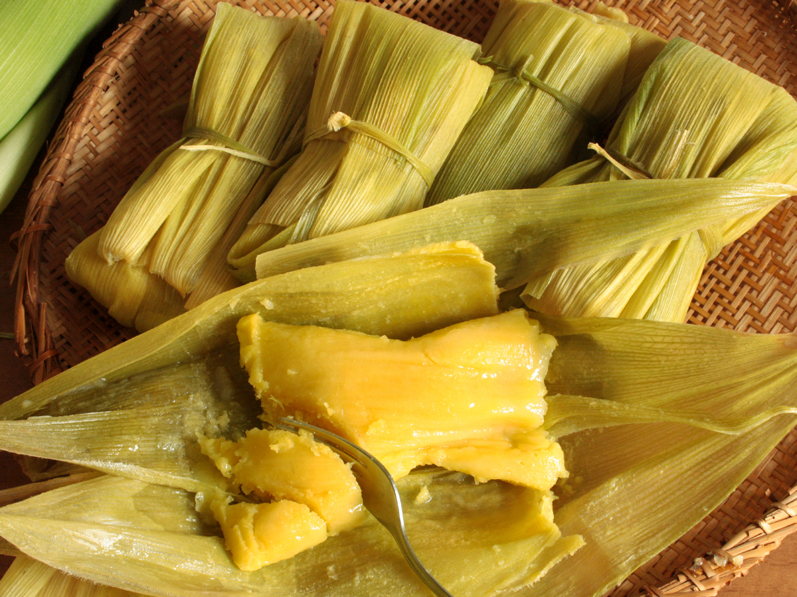

Pamonha is a boiled paste made from sweet corn whisked in coconut milk, typically served wrapped in corn husks..
- 4 sweet corn cobs, around 400g sweet corn kernels
- 150 g sugar
- 75 ml milk, approximately
- 1 tablespoon melted butter
- a pinch of salt
Steps
- Using a sharp knife cut off the end of the cob, shuck the corn and clean off the silk threads. Set aside the most beautiful husks to “wrap” the “pamonha”.
- Remove kernels from the corn cob with a knife and blend kernels with the milk to a paste. In the traditional recipe kernels are grated off the cob and the pulp is passed through a sieve (large aperture).
- Pour the corn pulp in a bowl and add the sugar, the melted butter and the salt. Mix well. The mixture should be thick. If necessary add a little more milk.
- Wash the corn husks and blanch them in boiling water for a few seconds to make them more malleable.
- “wrap” the “pamonhas” with the corn husks, tie the “packet” with a string or with a small strip of corn husk.